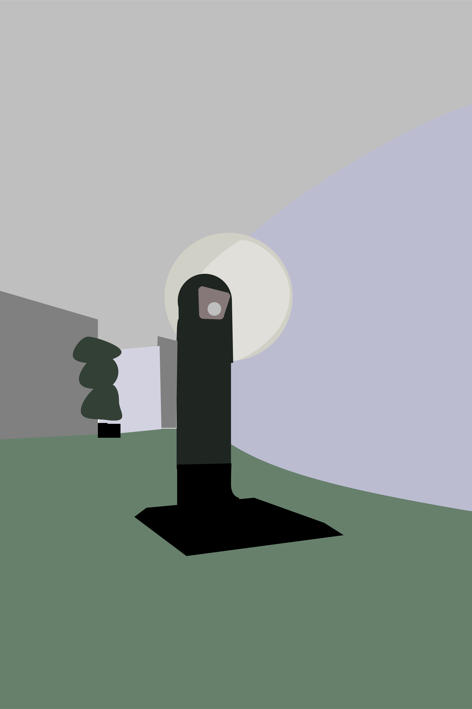

For this project I chose to use a photo from the headquarters of the French Communist Party in Paris, France. The building is from the 1960’s and has an amazing brutalist architecture, the spaces inside are curvy and open in a grand modernist style. The space has many unusual shapes and tones which held my interest. I chose a photo of a payphone centered in a curving hallway, the shape of the payphone and walls created an interesting combination of large and small well defined shapes together in the composition and lent themselves well to being abstractly rendered as more simple shapes, while still creating an interesting depth to the photo.
Go back Button